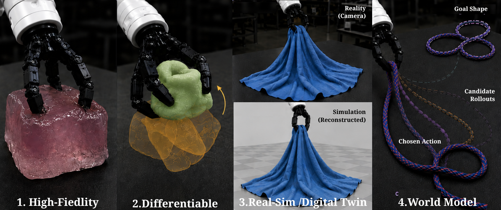
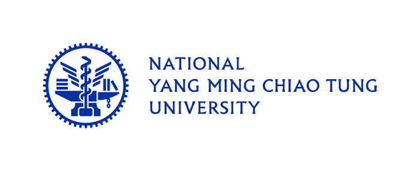
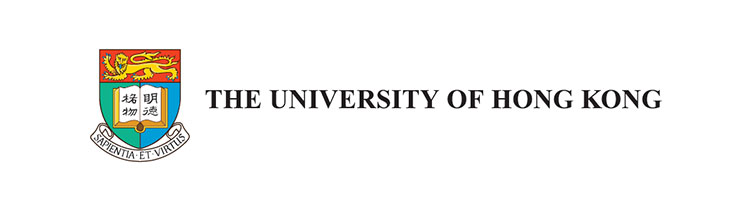
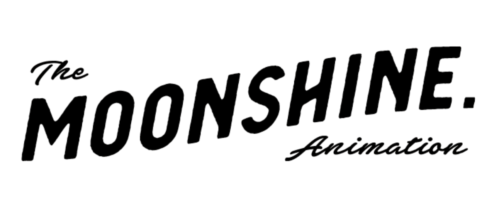
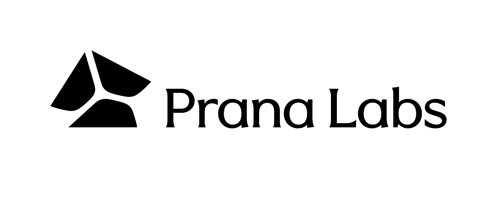

High-Fidelity Non-Rigid Simulation
FEM, MPM, and IPC solvers; frictional contact; near-incompressible and hyperelastic materials; granular and elastoplastic media; cloth and thin shells; GPU-accelerated, real-time solvers.
SIGGRAPH Asia 2026 · Technical Workshop
Next-Generation Differentiable Simulation for Physical AI and Embodied Robotics — faithful, fast, differentiable, and deployable physics beyond rigid-body dynamics, at the intersection of computer graphics and robotics.

Overview
The intersection of computer graphics and robotics has seen immense progress, yet most scalable Embodied AI still relies on rigid-body dynamics. As robots increasingly interact with soft tissue, granular media, deformable objects, and high-precision frictional contact, there is a critical need for next-generation physical simulators that are simultaneously faithful, fast, differentiable, and deployable.
Beyond Rigid Bodies (BRB) convenes researchers across computational mechanics, differentiable simulation, and robot learning. The program pairs invited keynote deep dives with extended, structured discussion and a closing panel, organized around four themes.
Four pillars
FEM, MPM, and IPC solvers; frictional contact; near-incompressible and hyperelastic materials; granular and elastoplastic media; cloth and thin shells; GPU-accelerated, real-time solvers.
Analytic gradients through contact for system identification, inverse design, computational design and fabrication, and robot manipulation and control.
Neural radiance fields and Gaussian splatting; scene and dynamics reconstruction; Sim-to-Real transfer; calibrated, deployable closed-loop pipelines.
Neural and generative world models; learned physics surrogates; neural PDEs/ODEs and reduced-order modeling; multi-modal predictive models for embodied agents.
Keynote speakers
Professor · The University of Hong Kong
Leads research in character animation, physics-based simulation, and interactive techniques. Recent work on whole-body manipulation, contact-rich scene interaction, and GPU-accelerated contact solvers sits at the boundary of animation and robot learning.
Assistant Professor · Tsinghua University (IIIS)
Develops computational design frameworks and differentiable simulation tools for soft robots, actuated mechanisms, and fabrication-aware optimization, discovering robot morphologies and control policies directly from simulation.
Assistant Professor · Columbia University (RoboPIL)
Works on structured world models and physics-inspired predictive models for Embodied AI, with emphasis on multi-modal perception, manipulation of deformable objects, and bridging learned simulators with real-world deployment.
Assistant Professor · Brown University (IVL)
Builds foundational methods for 3D/4D understanding of objects, humans in motion, and hand–object interaction. Work on dynamic neural fields, articulated-object understanding, and visuo-haptic pose tracking connects to Real2Sim and digital twins.
Schedule
Keynotes run ~35 minutes including discussion. Exact date, room, and start time will be confirmed by SIGGRAPH Asia 2026.
Organizers
Taku Komura · in person
Tao Du · in person
All attendees
Srinath Sridhar · online
Yunzhu Li · online
All speakers + organizers — open problems, benchmarks, practical barriers, and collaboration
Organizers
Connecting graphics simulation, computational mechanics, 3D vision, robotics, and physical AI across academia and industry.
Researcher · NTU & MoonShine Animation Studio
Research Fellow · National University of Singapore
Assistant Professor · National University of Singapore
Assistant Professor · University of British Columbia
Independent Researcher
Associate Professor · National Yang Ming Chiao Tung University
Distinguished Professor · National Taiwan University
Institutions & partners




Join us at SIGGRAPH Asia 2026 in Kuala Lumpur (Dec 1–4, 2026) for four keynote deep dives and an extended panel on faithful, fast, differentiable, and deployable simulation.
Contact: akinesia112@gmail.com